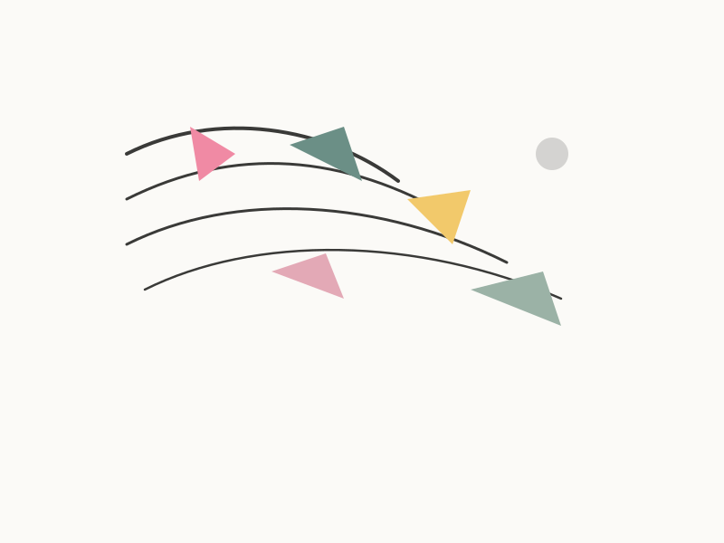

Apprendre à mieux se connaître
Il n’est pas nécessaire de ressentir un mal-être ou une souffrance pour se lancer dans un accompagnement psychologique. L’envie d’explorer qui l’on est vraiment, de comprendre ses pensées, émotions et modes de fonctionnement constitue une raison suffisante.
- Compréhension de ses émotions et réactions récurrentes dans certaines situations
- Identification de ses besoins pour enrichir ses relations et sa vie quotidienne
- Connaissance de ses forces, envies et limites pour faire des choix plus cohérents

Ce que l’accompagnement vise
Mettre en mots les pensées, émotions et modes de fonctionnement, accroître la connaissance de soi-même et de ses motivations profondes, faire des choix plus alignés avec ses valeurs et aspirations pour une vie plus apaisée.
